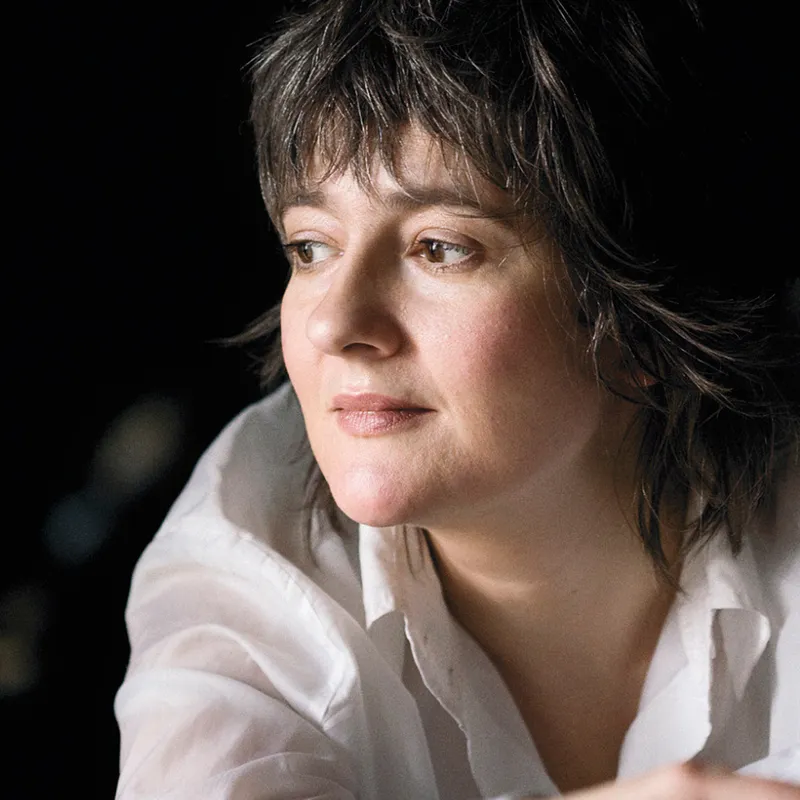

Olga Konkova
Klassisk skolert pianist som ble jazzartist. Terje Mosnes: «en autoritet som til tider antar Keith Jarrett’sk nivå».
Olga Konkova (født 25.8.1969) er en klassisk pianist som allerede 18-år gammel startet sin utdanning ved Russian Academy of Music, men som senere utviklet seg som jazzartist og komponist etter studier ved prestisjefylte Berklee College of Music i Boston.
Internasjonalt kan hun skilte med samarbeid med størrelser som for eksempel Dave Holland, Django Bates og Steve Swallow i «Focus Year» prosjektet 2017 i Basel, Sveits.
Siden Konkova bosatte seg her i landet har hun gitt oss en perlerad av kritikerroste album.
Hennes siste album - Olga Konkova Trio, The Pianist Garden (2024) er et eksperimenterende og vakkert prosjekt inspirert av lutherske koraler og komponert musikk, fritt kombinert med improvisasjon.
«Dette er ikke en tradisjonell pianotrio, men et vakkert eksperiment,» sier Olga. Med seg har hun Mark Heinecke (treblås, piano), opprinnelig fra Wisconsin og bosatt i Norge siden 1977, og Frederik Villmow (trommer), fra Köln, nå norskbasert trommeslager og klubbdriver i vekst.
Olga Konkova er utvilsomt en av landets fineste jazzpianister – «med en autoritet som til tider antar Keith Jarrett’sk nivå» (Terje Mosnes, Jazz i Norge).